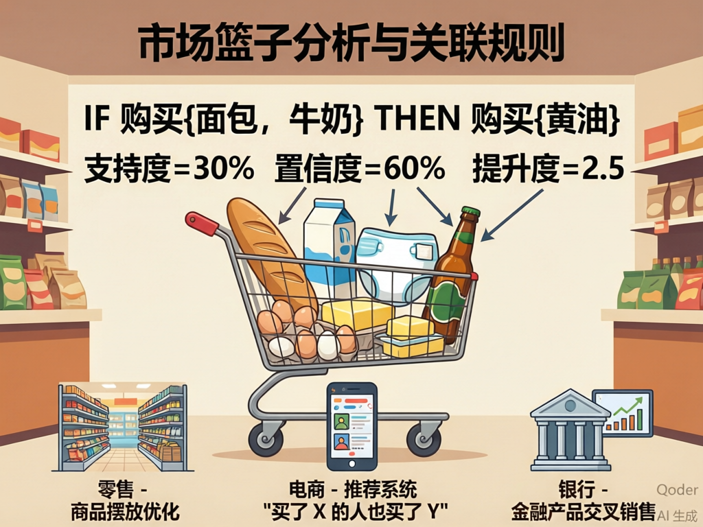
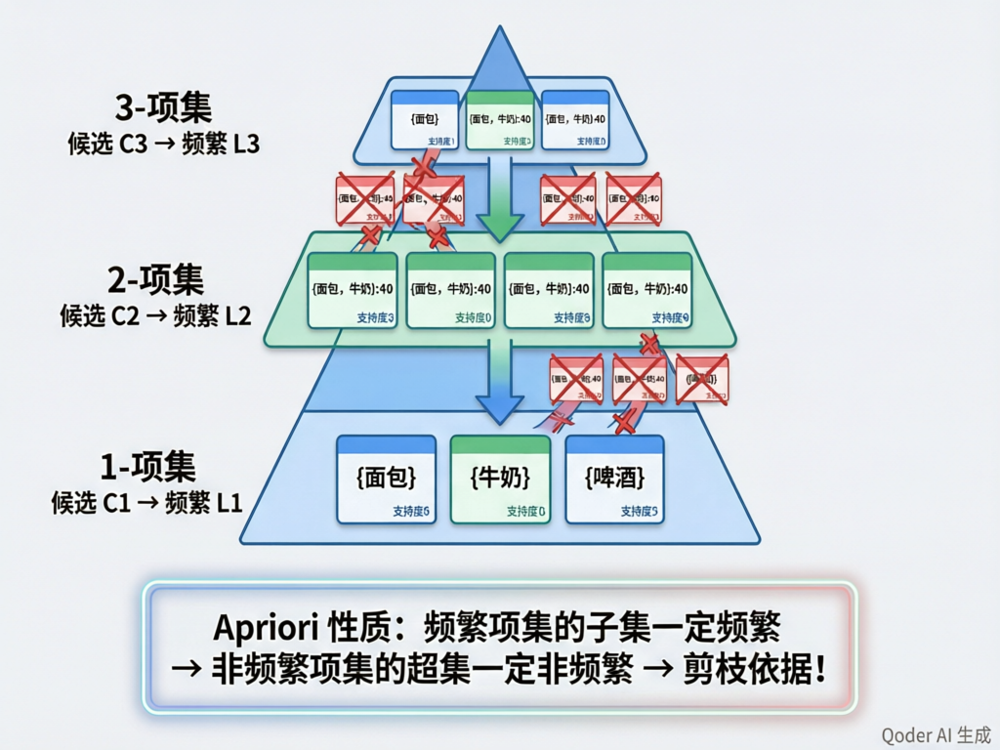
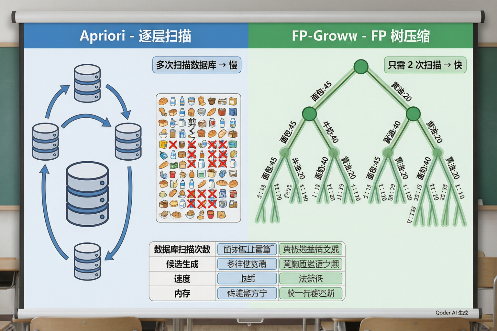
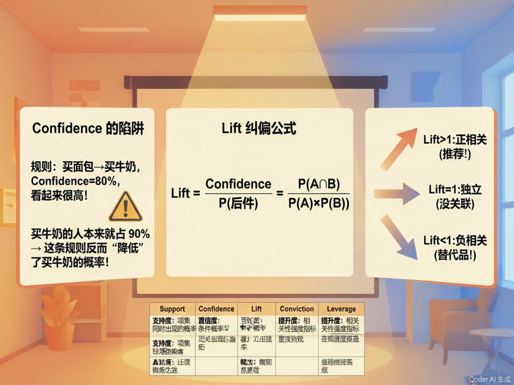

关联模式挖掘
买了面包的人为什么也买了牛奶？从购物小票中发现商品之间的"隐形关系"

定义
关联规则（Association Rule）是形如 X → Y 的蕴含式，其中 X 和 Y 是不相交的项集（itemset）。它表达的是"如果交易中出现了 X，那么 Y 也很可能出现"的模式。
含义：买了面包和牛奶的顾客，很可能也会买黄油
零售：货架摆放优化
把经常一起买的商品放在相邻货架或捆绑促销。沃尔玛的"啤酒+尿布"正是关联规则最经典的故事——周五晚上年轻爸爸买尿布时顺手带一箱啤酒。
电商：推荐系统
"买了这个的人也买了……""浏览过此商品的用户还浏览了……"——电商推荐引擎的核心逻辑之一就是关联规则。
银行：交叉销售
发现"办了信用卡的客户，三个月内开理财账户的概率很高"——银行据此设计精准的交叉销售策略。
医疗：症状关联
从病历中发现"症状A+症状B → 疾病C"的关联模式，辅助医生诊断和用药推荐。
P(面包∩牛奶)=30%
→ 100笔交易中有30笔同时买了面包和牛奶
P(牛奶|面包)=75%
→ 买了面包的人中75%也买了牛奶
=0.75/0.30=2.5
→ 买面包让买牛奶的概率提升了2.5倍
Confidence(X→Y) = Support(X∪Y) / Support(X)
Lift(X→Y) = Confidence(X→Y) / Support(Y)
Support 回答
"这条规则覆盖了多少交易？"支持度太低意味着规则只出现在极少数交易中，可能是偶然，不值得作为决策依据。通常设定 min_support 阈值过滤。
Confidence 回答
"买了X的人有多大可能也买Y？"置信度高说明规则靠谱。但有个陷阱：如果Y本身就很热门（比如90%的人都买牛奶），高置信度可能只是个假象。
Lift 回答
"X的出现是否真的提升了Y出现的概率？"Lift>1 表示正相关（推荐！），Lift=1 表示独立（不相关），Lift<1 表示负相关（买了X反而降低买Y的概率——可能互为替代品）。
🧠 课堂小测
什么是频繁项集？
项集（Itemset）是一组商品的集合，比如 {面包, 牛奶} 是一个 2-项集。频繁项集是指支持度超过最小阈值（min_support）的项集。关联规则必须从频繁项集中生成——如果 {面包, 牛奶} 本身就不常见，那基于它的任何规则都不可靠。
1000笔交易
每个单项的支持度
≥ min_support
{面包}:45%, {牛奶}:40%…
模拟数据：10笔交易示例
| 交易ID | 购买商品 |
|---|---|
| T1 | 面包, 牛奶 |
| T2 | 面包, 牛奶, 黄油 |
| T3 | 牛奶, 黄油 |
| T4 | 面包, 牛奶, 黄油 |
| T5 | 面包 |
| T6 | 面包, 牛奶, 黄油, 鸡蛋 |
| T7 | 牛奶, 鸡蛋 |
| T8 | 面包, 黄油 |
| T9 | 面包, 牛奶, 黄油 |
| T10 | 牛奶 |
设 min_support = 30%（即至少出现在 3 笔交易中）：频繁1-项集 = {面包}:70%, {牛奶}:80%, {黄油}:60%, {鸡蛋}:20%(淘汰)

这就是剪枝的数学依据——不满足条件的候选直接淘汰，不用浪费时间计算它的支持度。
逐层扫描 + 剪枝流程
得L₁
生成C₂候选
删除含非频繁子集的候选
计数→得L₂
自连接（Join）
从 Lₖ（k-频繁项集）生成 Cₖ₊₁（k+1-候选项集）。两个 k-项集如果前 k-1 个元素相同，就连接成一个 k+1-项集。
例：{面包,牛奶} + {面包,黄油} → {面包,牛奶,黄油}
剪枝（Prune）
检查 Cₖ₊₁ 中每个候选项集的所有 k-子集是否都在 Lₖ 中。如果任何一个子集不频繁，该候选项直接淘汰。
这是 Apriori 效率的关键。
计数（Count）
扫描数据库，统计剪枝后剩余的候选项集的支持度，保留 ≥ min_support 的项集作为 Lₖ₊₁。
每一层都需要扫描一次数据库。
规则生成算法
对于每个频繁项集 L，枚举它所有的非空真子集作为前件 X，L − X 作为后件 Y，计算规则 X → Y 的置信度。如果置信度 ≥ min_confidence，则输出该规则。
例: {面包,牛奶,黄油}
{面包},{牛奶},{黄油}
{面包,牛奶},{面包,黄油},{牛奶,黄油}
conf = sup(L)/sup(X)
是 → 输出规则
从刚才的10笔数据中生成规则（min_support=30%, min_confidence=60%）
| 规则 | Support | Confidence | Lift | 判断 |
|---|---|---|---|---|
| {面包} → {牛奶} | 50% | 71.4% | 0.89 | Lift<1 弱 |
| {牛奶} → {面包} | 50% | 62.5% | 0.89 | Lift<1 弱 |
| {面包,黄油} → {牛奶} | 40% | 100% | 1.25 | 强规则! |
| {黄油} → {牛奶} | 50% | 83.3% | 1.04 | 一般 |

Apriori 的痛点
• 每生成一层候选项集，都要重新扫描整个数据库
• 如果最长频繁项集有 10 个商品，就要扫描 10 次
• 产生大量候选——Cₖ 可能远大于 Lₖ
• 在海量数据上（百万级交易），多次全表扫描非常昂贵
FP-Growth 的解法
• 两次扫描：第一次统计单项频率，第二次把每条交易压缩到 FP 树中
• 把数据库压缩成一棵前缀树（FP-Tree）——相同的商品前缀共享路径
• 不产生候选——直接在 FP 树上递归挖掘频繁模式
• 速度通常比 Apriori 快一个数量级
FP 树构建示意
↘ 黄油:2
↘ 牛奶:3 → 黄油:2 → 鸡蛋:1
每条路径代表一批交易中共享的商品前缀，节点上的数字是该前缀出现的次数。
2000条交易记录
客户×商品01表
参数敏感性搜索
挖掘频繁项集
过滤 Lift>1
min_support 参数敏感性
| min_support | 频繁项集数 | 规则数（Conf≥60%） | Lift>1 规则数 | 评价 |
|---|---|---|---|---|
| 1% | 892 | 2456 | 1203 | 太多，难以分析 |
| 3% | 156 | 387 | 142 | 适中，可管理 |
| 5% | 38 | 72 | 28 | 较少但精准 |
| 10% | 8 | 11 | 4 | 可能遗漏有价值规则 |
Top 8 高 Lift 规则（min_support=3%, min_confidence=60%）
| 排名 | 规则 | Support | Conf | Lift |
|---|---|---|---|---|
| 1 | {咖啡, 面包} → {黄油} | 4.2% | 78% | 3.8 |
| 2 | {啤酒, 薯片} → {花生} | 3.8% | 65% | 3.5 |
| 3 | {牛奶, 鸡蛋} → {面包} | 6.5% | 72% | 2.8 |
| 4 | {意大利面, 番茄酱} → {奶酪} | 3.3% | 60% | 2.6 |
| 5 | {尿布} → {啤酒} | 3.1% | 42% | 2.5 |
| 6 | {牙刷} → {牙膏} | 5.8% | 88% | 2.3 |
| 7 | {洗发水, 沐浴露} → {护发素} | 3.5% | 55% | 2.1 |
| 8 | {狗粮} → {狗零食} | 4.0% | 50% | 1.9 |
规则解读要点
{咖啡,面包}→{黄油} Lift=3.8
买咖啡+面包的人买黄油的可能性是一般顾客的3.8倍。建议：早餐捆绑促销——咖啡+面包+黄油的套餐。
{牛奶,鸡蛋}→{面包} Lift=2.8
典型早餐组合，支撑度最高。建议：在面包货架旁放置牛奶和鸡蛋的促销提示。
{尿布}→{啤酒} Lift=2.5
经典传说中的关联被数据证实了。但置信度只有42%，说明这更多是个有趣的故事而非强力规则。
🧠 课堂小测

其他常用评估指标
| 指标 | 公式 | 含义 | 判断标准 |
|---|---|---|---|
| Conviction | (1−sup(Y)) / (1−conf) | "X出现但Y不出现"比随机情况少了多少倍 | >1 表示有价值 |
| Leverage | sup(X∪Y) − sup(X)·sup(Y) | X和Y共同出现的实际频率比"独立假设"下超出多少 | >0 表示正相关 |
| 确信度 | P(X∪¬Y)/P(X)·P(¬Y) | 衡量"如果X出现而Y不出现"有多"意外" | 越大越好 |
坑2：数据稀疏导致虚假关联。商品种类太多（长尾商品），大部分组合从未出现，偶然出现的组合可能产生误导性的高 Lift。
坑3：关联 ≠ 因果。买了啤酒的人可能也买了尿布 ≠ 因为买了啤酒所以买尿布。背后的"隐藏变量"可能是：周五晚上、年轻男性、在家带娃。
🛒 关联规则基础 → 购物篮分析 → 应用场景（零售/电商/银行/医疗）→ 三大指标（Support/Confidence/Lift）
↳ 🔗 Apriori 算法 → 频繁项集 → 向下封闭性 → 逐层扫描+剪枝（自连接→剪枝→计数）→ 规则生成
↳ 🌲 FP-Growth → FP树压缩 → 只需两次扫描 → 无候选生成 → 比Apriori快一个数量级
↳ 🧪 实验全流程 → 明细→购物篮矩阵 → min_support参数搜索 → 规则生成 → Lift筛选 → Top规则解读
↳ 🔍 评估进阶 → Confidence陷阱 → Lift纠偏 → Conviction/Leverage → 三大实战坑 → 规则→行动四步法
1. 关联规则挖掘回答的是"哪些东西经常一起出现"——支持度衡量"多常见"，置信度衡量"多可靠"，提升度衡量"多意外"。三个指标缺一不可。
2. Apriori 的核心是向下封闭性：频繁项集的子集必频繁。这让我们可以在每一层大幅剪枝，避免枚举天文数字般的候选组合。
3. FP-Growth 是 Apriori 的工程优化——用 FP 树压缩数据库，两次扫描搞定，不产生候选项集。真正的大数据场景中，FP-Growth 是更实用的选择。
4. 关联 ≠ 因果。一条再漂亮的规则也需要业务验证——能讲出故事、能通过 A/B 测试的规则，才是能创造价值的规则。
你现在已经理解了关联模式挖掘的完整链路：从交易数据到频繁项集，再到关联规则，最后落地为商业行动。感兴趣的话，可以继续深入探索：序列模式挖掘（GSP/PrefixSpan）、推荐系统中的协同过滤与关联规则的结合、以及因果推断如何弥补"关联≠因果"的根本局限。